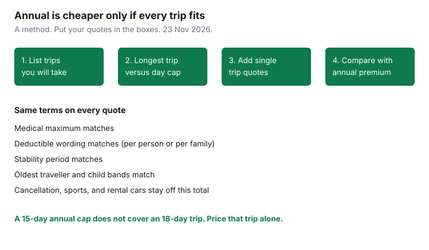

Insurance · Canada
Family Travel Medical Insurance in Canada: Single-Trip vs Annual Multi-Trip Math
Families buy an annual multi-trip plan because it sounds cheaper than shopping every March break, then discover the plan caps each trip at 15 or 30 days while the one trip that mattered was 18 days in July. Other families buy a single-trip policy for a long summer holiday and then pay three more single-trip premiums for weekends that an annual plan would have covered at a lower total. The arithmetic is not a slogan. It is a count of trips, a count of days on the longest trip, the ages on the certificate, and a deductible that applies per claim rather than once per year. This page is that worksheet for Canadian households. It is not a price survey, and it does not rank insurers.
What a provincial health plan pays outside Canada is a small daily hospital amount, set out on the provincial gaps guide. A trip that never leaves Canada has a different gap, mostly ambulance and drugs, on the within-Canada guide. Do the medical-core decision here. Do not fold cancellation, sports, or a rental car into the same premium and call it one product.
Disclosure: Education only. Travel medical policies are an offer type. Saving Optimizer may earn a commission if partner links are added later. We do not currently claim a partnership with any insurer, and we do not rank plans. Premiums below are a labelled method, not a quote. Certificates and provincial rules were read against the pages cited on 23 Nov 2026.
Key takeaways
- List every trip you will actually take, and the length of the longest one, before you compare an annual premium with the sum of single-trip premiums.
- An annual plan that caps trips at fewer days than your longest holiday does not cover that holiday. Price a single-trip policy for the long one, or buy an annual plan whose cap fits.
- Child rates and student cut-offs are contract bands, not a national age. A dependent on a parent’s plan and a student plan are different certificates.
- Deductibles are often per person, per claim, or per trip. Two children in one emergency can mean two deductibles. Read the words.
- Cancel-for-any-reason, adventure sports, and rental-car damage are different products from emergency medical. Keep them off the medical comparison.
Count planned trips and longest trip length before you choose annual
Write the next twelve months on one page. Include the trips you have already booked and the ones you repeat: a week with grandparents in another province, a long weekend in the United States, March break, and the summer trip. Ignore hypothetical travel. An annual plan priced for a fantasy itinerary is how households overpay.
| Plan shape | When it fits | When it fails |
|---|---|---|
| Single-trip | One holiday, especially if it is longer than the annual plans you were shown. You know the dates. You can match stability and the sum insured to that trip. | Four or five shorter trips whose single-trip quotes, added up, exceed a comparable annual premium with a day cap you will not breach. |
| Annual multi-trip | Several trips, each shorter than the plan’s per-trip maximum (often sold at 10, 15, 30, or more days — the certificate’s number is the only one that counts). | Any single trip longer than that maximum. Day 16 of a 15-day cap is uninsured unless you bought a top-up before you left, on the insurer’s timeline. |
| Annual for the short trips, single-trip for the long one | A common household pattern: weekends all year, plus one three-week trip. Compare the combined premium with one annual plan whose cap covers the long trip. | Buying both without checking that the long-trip policy and the annual policy do not double-charge the same days, or leave a gap between them. |

Use the same medical maximum, the same deductible, and the same stability wording on every quote. A $10 million maximum on one quote and $1 million on another is not a price comparison. Neither is a plan that excludes pre-existing conditions beside one that covers them if they were stable for 90 days. The Financial Consumer Agency of Canada’s insurance guidance is to compare the coverage, not the headline. For travel medical, the coverage that changes the price is the age of the oldest traveller, the trip length, the deductible, and the stability period.
Employer and credit-card benefits come off the list before you shop. If a group plan already covers the family for trips under 15 days, the annual retail plan is only earning its premium on the trips the group plan misses. The card certificate often requires the trip to be charged to the card and often stops at an age or a day count. Subtract what you already have, then price the rest. Two policies that both say they are secondary will not each pay the hospital in full.
Child age bands and student travellers on the same policy
There is no Canada-wide age at which a child must have their own travel policy. Certificates use bands: infants, children under a stated age included at no extra premium or at a child rate, then a higher band, then adult rates. A “family” rate sometimes requires two adults and dependent children under a cutoff, and sometimes prices each person. Ask which one the quote used. A family rate that looked cheap can become two adult rates the year the oldest child crosses the band.
- Dependants on a parent plan. The definition is in the certificate: age, full-time student status, and whether the child lives with you. A 20-year-old who is not in school may already be off the plan. Do not discover that at the clinic.
- Students travelling without a parent. Some family plans cover a dependent child travelling alone. Some require a parent on the same trip. The child on a term abroad needs the plan that matches that sentence, plus a check that the provincial card still covers them. Ontario students studying full-time in another province keep OHIP only if they meet Ontario’s proof rules, described on the within-Canada guide. A study term outside Canada is the out-of-country problem, not the interprovincial one.
- Newborns. Certificates often cover a newborn only after a number of days, or only if the parent was insured before the birth and the trip was not taken to give birth. Read the newborn clause before you fly with an infant.
- Different ages, one contract. The oldest traveller often sets the price for a couple. Adding a child may add little. Adding a grandparent to “make it a family plan” can reprice the whole certificate into a higher age band. Quote the grandparent separately and compare.
Deductible per claim vs per policy—family claim patterns
A deductible is the amount you pay before the insurer pays. On travel medical contracts it is often per person and per claim, or per person per trip. It is less often one deductible for the whole family for the whole year. The words change the math when more than one person is hurt.
| Wording | Two children, one incident, $3,000 eligible each |
|---|---|
| $500 per person, per claim | You pay $500 twice, $1,000, if each child’s care is its own claim. The insurer’s share starts after each deductible. |
| $500 per family, per trip | You pay $500 once for that trip, if the certificate actually says the family shares a deductible. Many do not. |
| $0 deductible | The premium is higher. It can still be the better net cost if you expect small clinic bills, which are exactly the bills a high deductible wipes out. |
Families generate clustered claims: one stomach bug, three patients, or a car crash with more than one passenger. A deductible chosen because a couple “probably will not claim” underprices that pattern. Match the deductible to the bills you would struggle to pay twice, not to the maximum on a marketing page. Also check whether follow-up visits in the same illness are one claim or several. A daily clinic visit that restarts the deductible is a different product from one that treats the illness as a single event.
Coinsurance is the other cut. Some certificates pay 100 percent after the deductible up to the maximum. Some pay 80 percent. Compare them in dollars on a plausible bill, not in adjectives. Provincial plans may still be first payer for a slice of a physician fee inside Canada, and a token daily amount outside Canada. The travel insurer usually wants that slice claimed. Build the provincial form into the folder you pack, especially for an Ontario claim that must go in within 12 months if you paid up front.
Adventure sports and rental car medical add-ons: keep separate from medical core
The medical core is emergency illness and injury, ambulance, and evacuation, under the stability rules. Everything else should be priced as its own line so a sport rider does not disguise an expensive medical base, and so a cheap medical base does not hide a sport exclusion.
- Adventure and sport. Recreational skiing may be included while heli-skiing, scuba below a stated depth, or hockey are excluded or sold as a rider. Read the exclusion list against the actual itinerary. A rider for a two-day activity should not force you onto a different medical maximum. If the insurer only sells the sport cover bundled, note that in the comparison so you are not praising a medical price that includes a benefit you will not use.
- Rental cars. Damage and liability on a rental vehicle are auto products. They are not travel medical. A medical bill after a crash can fall on the travel policy. The car itself falls on the rental contract, a personal auto policy, or a card benefit with its own rules. Keep those quotes off this worksheet. Mixing them makes the annual medical plan look artificially expensive or cheap.
- Trip interruption that pays extra hotel nights because you are in hospital is often part of a travel package. It is still not the hospital bill. If you only need the hospital bill, do not pay for a large cancellation schedule you will not use. If you need both, list both premiums.
An exclusion for alcohol, for a motorcycle, or for a sport you have already booked is an exclusion. The time to read it is before you pay, not from the clinic.
Cancel-for-any-reason vs standard cancellation—different product
Cancel for any reason is trip-cancellation insurance with a wider trigger. Standard cancellation pays for named reasons: illness, a death in the family, a jury summons, and the other perils the certificate lists. Cancel for any reason, where an insurer offers it, typically reimburses a percentage of prepaid, non-refundable costs if you cancel for a reason the standard list does not cover, and it must be bought within a short window after you book. It does not pay a hospital. It does not replace travel medical. Households stack them in one cart and then compare the total with a medical-only quote, which makes the medical-only quote look like a bargain and leaves the trip’s prepaid hotels uninsured.
Decide cancellation on the money you would lose if you did not go: flights and hotels you cannot recover, minus what the airline or hotel already owes you as a credit. If that amount is small, cancellation insurance of either type can cost more than the risk. If that amount is large, price standard cancellation first. Add a cancel-for-any-reason upgrade only if the extra premium is smaller than the extra situations you are actually buying it for, and only if you will remember the purchase deadline. Neither product belongs in the single-trip versus annual medical comparison. Run that comparison on the medical premium alone, same maximum, same deductible, same travellers.
Renewal checklist each year as kids age into new rate bands
An annual plan renews. The ages renew with it. Put a reminder 45 days before the anniversary, in the same habit as the insurance review, and answer six questions:
- Who is on the plan, and who had a birthday that crosses a band? Quote the child who aged out as their own traveller before you auto-renew a “family” rate that no longer includes them.
- Did anyone start, stop, or change a medication? Stability is measured backward from each departure, but a renewal application may ask about the change immediately. Tell the insurer. A silent renewal is not a waiver of the questions.
- Does the per-trip day cap still cover the longest trip you have booked for the next year? If you added a three-week trip, the old 15-day annual plan is the wrong shape. Change it before departure.
- Is an employer plan or a card certificate now doing part of the job, or has it stopped because someone changed jobs or the card was cancelled? Subtract overlap. Fill new holes.
- Are the emergency phone number and the provincial claim address still in the trip folder? A claim delay is often a missing form, not a denied illness.
- Did you pay for sports, cancellation, or a rental car you did not use? Drop those riders at renewal. Keep the medical core that matched last year’s real trips.
Assuris protects a health-expense benefit, which includes travel medical issued by a member life and health insurer, for the greater of $250,000 or 90 percent if that company fails. That is insolvency protection. It is not a reason to pick a vague certificate. The certificate’s day cap, deductible, and stability clause are the reasons a claim pays. Re-read them when the kids change bands. The premium will change. The promises should change only when you meant them to.
Sources & date stamps
- Financial Consumer Agency of Canada, getting insurance — compare what the policy covers, not only the price. Used 23 Nov 2026.
- Ontario, OHIP outside Ontario and the abroad guide — provincial plans are not a family travel-medical policy. Used 23 Nov 2026.
- Assuris, how am I protected — travel insurance at a member insurer is a health-expense benefit: the greater of $250,000 or 90 percent. Used 23 Nov 2026.
- Day caps, family rates, deductibles, and cancel-for-any-reason windows are contractual. There is no national premium and no national child age. The certificate you are about to sign is the source.
Frequently asked questions
Is an annual plan always cheaper for a family?
No. Add the single-trip quotes for the trips you will take, on the same medical maximum and deductible, and compare that sum with the annual premium. If any trip is longer than the annual plan’s per-trip day cap, the annual plan does not cover it unless you buy extra days.
Are my children included until 21 or 25?
There is no national age. The certificate defines a dependent child, often with a student test. A workplace health plan’s age and a travel policy’s age can differ. Read both before a trip the child takes alone.
If two of us are treated, do we pay one deductible?
Only if the certificate says the deductible is per family or per policy. Many travel-medical deductibles are per person and per claim. Assume two deductibles until the wording says otherwise.
Does cancel-for-any-reason cover a hospital bill?
No. It is a cancellation benefit for prepaid trip costs, and only on the terms of that upgrade. Emergency medical is a separate promise. Compare medical quotes without folding cancellation into the price.
Is this insurance advice?
No. Education only. Travel medical policies are an offer type. We do not claim a partnership with any insurer or rank plans. Your quotes and the certificate control.